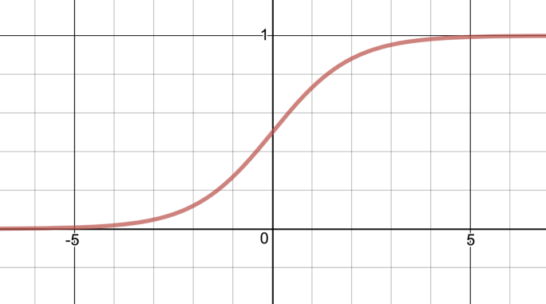

ReLU
ensures outputs are positive by setting negative values to zero
for example: if a filter is fixed, like an edge-finder, then we want it to spit out numbers that map to grayscale. If it's trainable, though, it could spit out numbers that are out of bounds, and so ReLU makes sure it produces usable output.
activation functions like ReLU, "lets the signal pass through the neuron if the in-signal z is big enough, but limit the output from the neuron if z is not."*
Examples
ReLU (rectified linear unit)
Sigmoid
